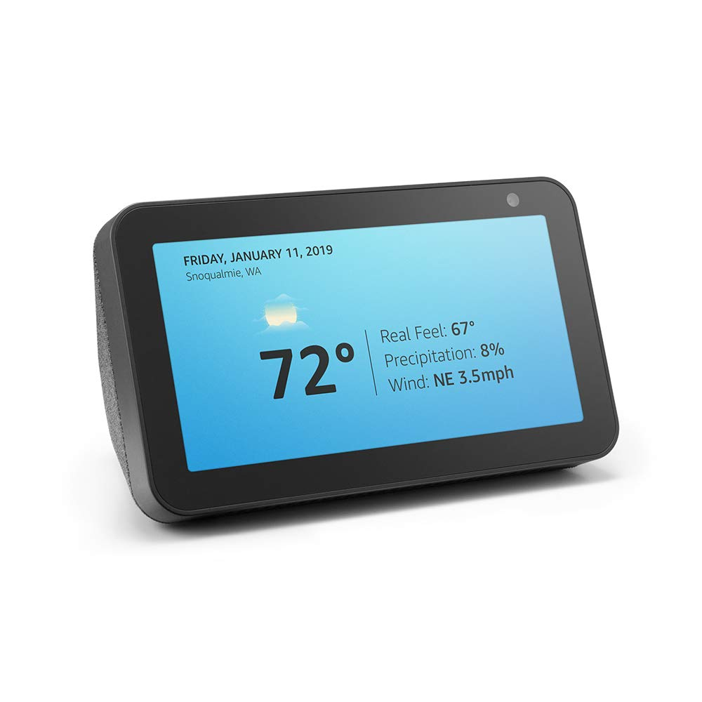
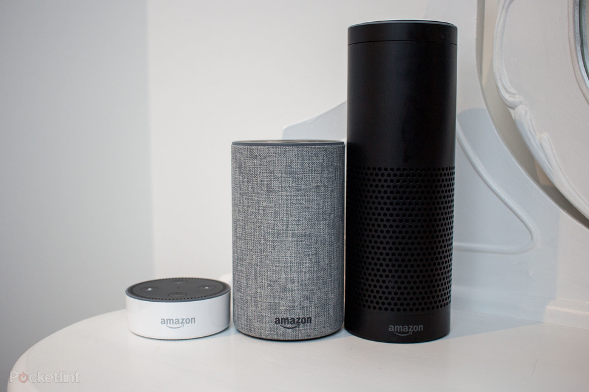
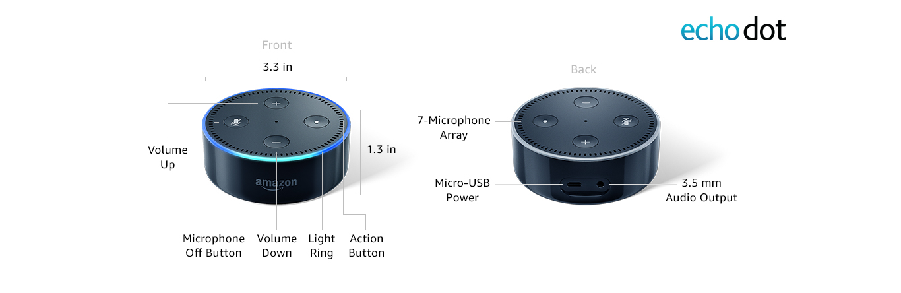

The Amazon Echo is one of a range of hands-free speakers and devices from Amazon that can be controlled with your voice. The voice-controlled "personal assistant" on these devices is called Alexa, which will perform various tasks for you and control various systems. 
There are two sides to this question - devices that work with Alexa and devices that offer Amazon Voice Services, which is the platform that runs Alexa.
Firstly, Alexa is designed around Amazon's own Echo devices. The Amazon Echo range includes the standard Echo, Echo Plus, Echo Studio, and Echo Dot, which are all speakers, and then the Echo Show, Echo Show 5, Echo Show 8, and the Echo Spot, which also feature a display, so you can give visual feedback, like weather widgets, videos or song lyrics. There are several Amazon Alexa gadgets too, like the Echo Wall Clock and Echo Flex smart plug for example.
The cheapest Echo device is the Echo Dot, which is a good starting point for building an Echo system and getting started
There are plenty of other devices that offer Alexa voice control, such as the Sonos devices, Bose Home Speaker 500 or Polk Command Bar.
The way all these devices come to work is easy. When they hear the Alexa wake word from you, Alexa will swing into action and respond to your commands.
Alexa is able to play music, provide information, deliver news and sports scores, broadcast the weather forecast, control your smart home, etc. Alexa expands the information offered all the time and corrects the responses to give you more accurate information. No matter what Alexa device you ask, all can return with satisfactory answers at anytime you want.
One of the main functions of Alexa is playing music. Amazon Music is supported but beyond that there's support for many more services like Spotify, Deezer, Apple Music, TuneIn as well as apps from individual providers, like the BBC.